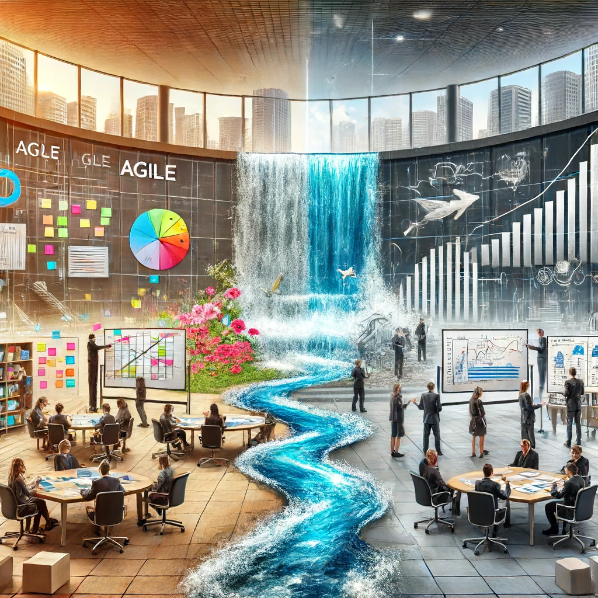

Reporting on a big waterscrum project

I once worked in a smaller development unit with around 100 developers. We were part of a big corporate and got the task as a whole company to finish a strategic project within 12 months. I was assigned to be the project lead on our part and had to make sure we delivered. We used to be an agile development shop, which now got closer and closer to corporate processes.
We finished on time, we all together did a good job.
What were the challenges?
- 5 months before project start a colleguage of mine and I had to estimate what it would take to finish that project.
- As it was decided that we should do it, we got new partners from the parent company which were used to their processes and steering external development companies.
- Reporting was totally different and there was no doubt about the date, the scope and the money.
- Not everything was specified.
- An external consultancy was hired to help and to steer us.
- The cultural differences were obvious. A more agile vs a more waterfall approach.
It was very important to everybody to have weekly status reports to know where we are so we can take measures if things got off-road.
Makeing a plan now and just executing it seems like a not usable solution. Things were not clear and just sticking to that plan would not have done it. We wanted a more dynamic plan where we start with an assumption about the amount of work and then adjust it along the way. It would be important to have enough time to see, communicate and react to changes.
What we did not wanted to do is do a new powerpoint reporting every week to show where we are and how things are going to be. That felt like a lot of manual and repeated work.
We wanted to have a system where:
- It is always up to date
- We did not want to spent a lot of time on it
- Everybody could see
- It is available all the time
The solution
We had a Jira and Confluence as setup already established. A colleguage of mine (hi Daniel) and I sat together and thought about a solution.
We had a few teams which were supposed to work on different workstreams with their respective milestones. The order of the work was roughly set. The teams could estimate the tasks for the next two sprints (each two weeks). Everything longer than that was not that clear.
To get an idea how much work we had, we asked the teams to give the best very quick estimate all the stories we knew, even if those were unclear, we needed an idea. We could have done classic T-Shirt sizes, but we went for story points. That was an effort and idea which I did not like in the first place. Thinking about things which are so far away and will change for sure seemed like a waste of time. But I did not see a way around it.
We leveraged Jira’s built-in capabilities to show the change of scope among other things. To do that we could only rely on stories. It’s just the way Jira works. Even if it was just a placeholder story which got replaced later, we wrote all stories we could foresee until the end, so the amount of work (measured in story points) and the progress on it would be transparent.
So now, as the project progressed, the teams closed stories, refined new ones, the estimates for the next ones got more accurate. If features got removed or new ones added, we could see it immediately.
To get an estimate about the finishing date, we calculated the average velocity of the last 3 sprints and checked where we would land. To have a corridor, we used the min / max velocity of the last 6 sprints to give us lower and upper borders. That whole calculation was using the Jira API to get the data and used the Confluence API to create a beautiful table with all teams and all dates on it, timelines and graphs included.
We based our assumption on:
- To get the most up-to-date data, it is best to use the tools the development already teams use
- To know what is in front of us, we need to estimate everything no matter how vague it is, if this explodes later we would see it and have time to react
- We assumed the team will perform like the average of the current last 3 sprints
- The worst case scenario was a performance like the worst of the current last 6 sprints
- The best case scenario was a performance like the best of the current last 6 sprints
- Dividing the remaining story points by average, min, max gives us good estimated window when we will be done
With that and Jira’s own reporting, we detected scope creep, exploding features and unexpected slow development. As a result of it, we changed development plans or removed features from the roadmap. The process of our reporting helped us to concentrate on solving business or technical issues while ’easily’ having an eye on the scope and timeline.
We started January 1st and on December 12th we successfully run it in production.
This was a very big effort and had compromises everywhere. Every party had to change and find a way to work together. I’m thankful for my team and colleagues to push through this together. I could not have done it without you. It was an intense year, hard work and I enjoyed it.
If this was any helpful to you or have different ideas how you can approach this, drop me a line on LinkedIn.